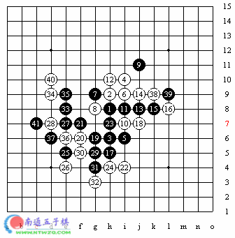
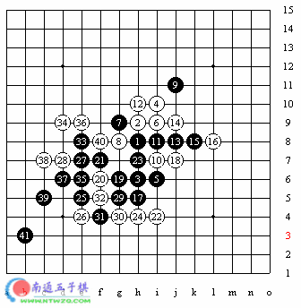
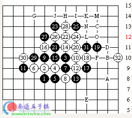

这是陈伟在PBM通讯战（即所谓E-mail比赛）中对slava的一盘棋。由陈伟老师执黑。
开局至12手，不，是至27手大家一定很眼熟，不错，这正是世界杯A组赛中Ando执黑对Joachim Gaulitz的前27手。当时我们网站在报导里说，这个变化据说是张进宇张老师或陈伟老师在基地告诉Ando的。这或许没有亲见，但如我们所说，这个变化是中国人所发明，是确信无疑的。其中17手是张老师发明的，主要是针对白18反冲后的走法。而17-27是陈伟老师研究的，关于白18不反冲单防，上海棋手曾向北京推荐过一种走法，是25-27，作V，很强，基本上防不住了，但……这样吧，作为一道题，25-27后白先如何胜？有兴趣的话可以做一做，如果有什么问题的话我们将在下一期的疑难解答中答复。其实28-28也许比Gaulitz的28-33更强。29跳三，30有是否冲四的选择，先冲则又是一个变化（如下图），也是黑必胜，41-D5也很强，但白42-41唯一防，防住了。这有些敌之要点，我之必占意思吧。
实战中白棋没冲四，于是黑棋先手活三冲断。32唯一。33-35必然，37是唯一的胜法，大家可以试试，其它点白棋都有反或用反先的手段。40不得已而为之，41后，看起来白B9、D11，但注意D8，这不是3.3禁。所以黑棋的活三恰好成立，白可以先在D8冲掉，但黑棋上方又有了两步冲四4.3，胜负真是只差一线之间啊！至41手白遂投子认负。

这是陈伟老师在PBM通讯战中和slava的另一盘棋。还是陈伟老师执黑。
疏星开局，至11手是定式。这届世界杯似乎更流行12-F8的下法，不过那时这个白12走得很多。这个13手与13-14的是黑13最常见的两种下法。而14-14后，15还有15-17之类的走法，但当时的感觉是黑棋越来越不好下。于是很多棋手尝试着别的走法，以开辟出新的变化。而这个15，有一种看法，认为白棋不能直接取胜。于是陈伟老师在自己的比赛中进行了大胆的试验。
但对方对此似乎早有研究，据陈伟老师说，对方几乎没有想，甚至是他白天将棋谱传过去，次日晨对方就有了回应。
18活三。没有理由挡在另一边。20至26手白棋强攻，黑棋每一手都应是必然的。据陈伟老师说，27还有挡在另一侧的选择，以下白棋A、B抓3.3禁，黑棋也许可以挡在C、D之类的点，但最终白棋都有E点的手段，虽然不是直接取胜，但白棋的优势是显而易见的。实战中27挡在了这一侧。28活三，29手必然，如果跳冲则白反后跳冲抓4.4禁；28手后白棋有很多套V，总之黑棋是必须防的。比如：31-F或B，则白G、H、I、J、K、31、L后4.4；31-L或H则冲四后抓禁；31-J则在H点抓禁。31-31应该说已经是最强了，32手非常漂亮！作V，黑33如-L或H等点，则白跳冲后抓3.3禁；33-D等点则两步跳冲后抓4.4禁，33-F则白G、H、I、J、M、N、O，4.4胜；33-B，则也可以用刚才的VCF4.4胜。也可以G、H、I、J、M、O抓4.4禁胜。白已必败，至32手陈伟老师遂投子认负。